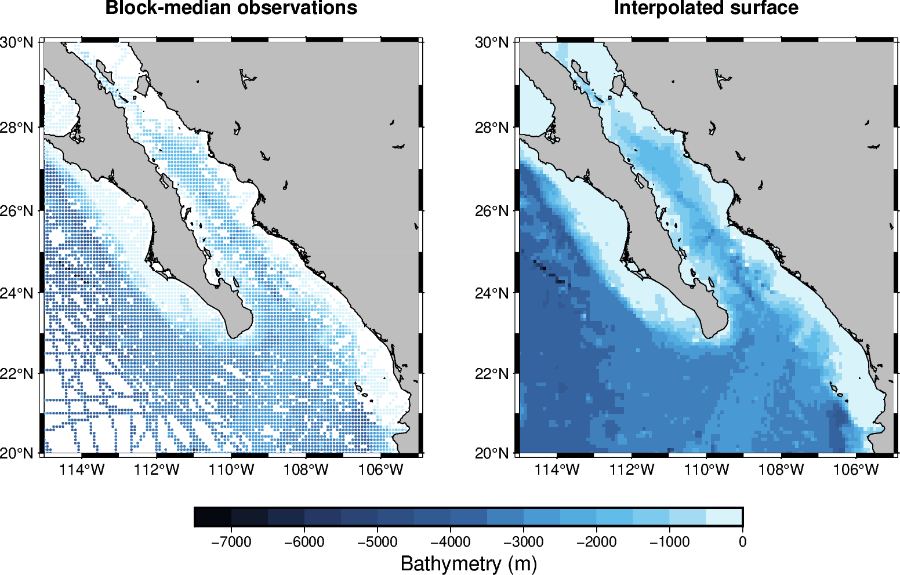

Note
Go to the end to download the full example code.
Gridding scattered data
The pygmt.surface function interpolates irregularly spaced (x, y, z)
observations onto a regular grid. Before interpolation, it’s usually recommended to
preprocess the data using one of pygmt.blockmean, pygmt.blockmedian, and
pygmt.blockmode, to avoid aliasing short wavelengths, by returning one value for
every occupied block.

import pygmt
from pygmt.params import Axis, Frame, Position
# Load irregular ship-track observations of bathymetry off Baja California.
data = pygmt.datasets.load_sample_data(name="bathymetry")
region = [245, 255, 20, 30]
spacing = "5m" # 5 arc-minutes
# Calculate one representative median value for each occupied block.
reduced_data = pygmt.blockmedian(data=data, region=region, spacing=spacing, center=True)
# Interpolate the reduced observations onto a regular grid. The value "d"
# constrains the grid to the minimum and maximum input data values.
grid = pygmt.surface(
data=reduced_data, region=region, spacing=spacing, lower="d", upper="d"
)
fig = pygmt.Figure()
pygmt.makecpt(cmap="gmt/geo", series=[-7500, 0, 500])
pygmt.config(FONT_TITLE="12p", MAP_TITLE_OFFSET="4p")
with fig.subplot(nrows=1, ncols=2, figsize=("20c", "9c")):
# Block-median observations.
with fig.set_panel(panel=0):
fig.basemap(
region=region,
projection="M?",
frame=Frame(
axis=Axis(annot=2, tick=1),
title="Block-median observations",
),
)
fig.plot(
x=reduced_data.longitude,
y=reduced_data.latitude,
fill=reduced_data.bathymetry,
style="c0.05c",
cmap=True,
)
fig.coast(land="gray", shorelines="0.5p,black")
# Interpolated surface grid.
with fig.set_panel(panel=1):
fig.grdimage(
grid=grid,
region=region,
projection="M?",
frame=Frame(
axis=Axis(annot=2, tick=1),
title="Interpolated surface",
),
cmap=True,
)
fig.coast(land="gray", shorelines="0.5p,black")
# Position the color bar using explicit plot coordinates:
# 10 cm is the horizontal center of the 20 cm wide subplot.
fig.colorbar(
position=Position(("10c", "-1.2c"), cstype="plotcoords", anchor="TC"),
length=12,
width=0.4,
orientation="horizontal",
annot=1000,
label="Bathymetry (m)",
)
fig.show()
Total running time of the script: (0 minutes 0.502 seconds)